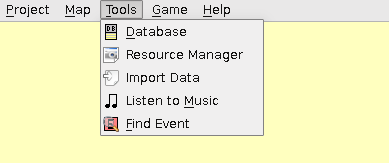

[User Interfaces]->[Main Window]->[Menu Bar]->[Tools]

- Database:
- Opens the database to edit things such as tilesets, terrain, characters, etcetera.
- Resource Manager:
- Opens the resource manager, which allows you to import, export, and delete some of the projects resources.
- Import External Data:
- Opens a dialog used to import resources from other applications, such as RPG Maker 2003.
- Listen to Music:
- Opens a dialog to browse and listen to some of the available music to use in the project.
- Find Event:
- Opens a dialog to search for a specific event in the current map.